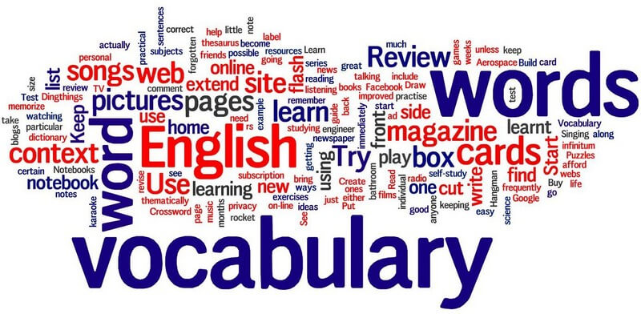
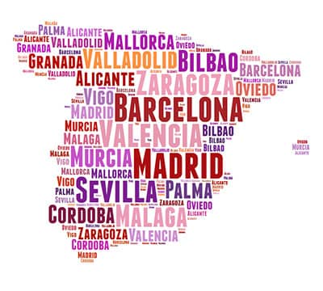

Languages
I am a trilingual speaker and still wanting to learn more lanuages.
My first language is Cantonese since I am hometown is Guangzhou, a city in the southern China. However, when I started to go to school, I learnt Mandarin and speak Mandarin while I was at school in China. While in school, I also learnt English as well, and now I live in the US, I speak English, Cantonese and Mandarin every day when I will be in different situation and with different people.

The language I want to learn and try to master it next will be spanish. The reason why it's that I think it's one of the most popular languages and I think some of the words sound very similar to Cantonese.
